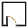

Znak to fragment planu architekta: ściany pomieszczenia i drzwi z łukiem otwarcia. Drzwi to moment odbioru kluczy, pokój to gotowe wnętrze, czyli dokładnie obietnica firmy „od kluczy do gotowego wnętrza”. Łuk jest złoty, bo to jedyny akcent; reszta znaku pracuje czernią. Forma jest prosta, więc działa od favicony 16 px po szyld.